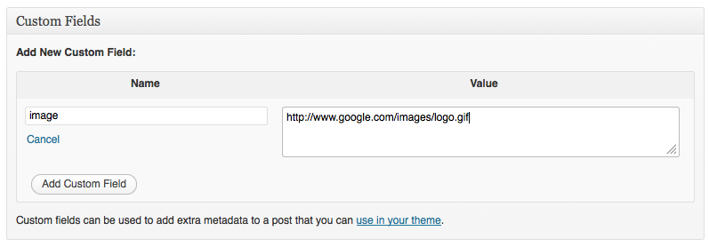
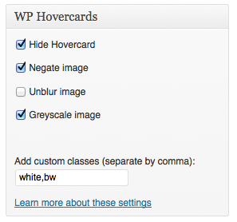

01. Introduction
I've decided to release my first ever WordPress plugin to the community, and it brings you the beauty of WordPress hovercards in your website. It uses some unique ways to ensure that data is available in JSON through your backend, and it can be processed through jQuery and JavaScript to look awesomely gorgeous in your frontend!
Hovercards is designed to work out of the box. Enable it and suddenly it does magic. It finds its own way to obtain the information it needs, and present it in a beautiful and crisp design. Backed by a flawless JavaScript design, you can't ask for more in a simple plugin.
The reason we designed this plugin was because Hovercards increases user engagement massively, as it makes browsing your website more easier. Users can see what an article is about through the excerpt without even clicking a button. It just works; it's smart, and it's the first of it's kind.
02. Installation
How to install Hovercards on WordPress
03. Background image
Hovercards will accept any image URL through a custom field 'image' as seen below, or as a featured image if it is supported on your theme. Once either of them have been provided, Hovercards will do the rest.

04. Settings
Hovercards will insert a setting panel when you add/edit pages or posts, which is where Hovercards is currently supported. This can be designed to tailor every single aspect of a hovercard from background effects, to custom CSS classes that can be used in wp-hovercards.css element alongside the div.content element.

Here's an example of a CSS effect of making text red (to enable set as 'red' in custom classes in box above on posts/pages).
div.wp-hovercards-root div.content.red div.excerpt { color:#ff0000; }